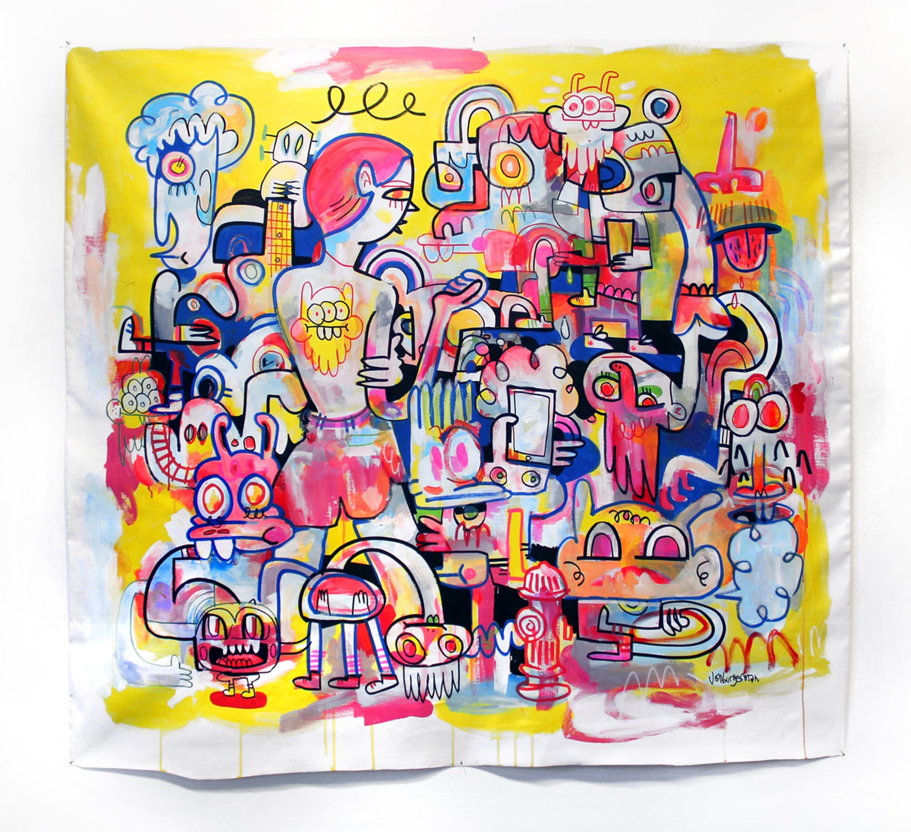

Interview with Jon Burgerman
Jon Burgerman is a UK born, New York City-based artist, who is well-known for his doodle art style. He studied Fine Art at Nottingham Trent University and graduated in 2001, after which he began developing his now pervasive and instantly recognizable aesthetic that exists across a multitude of forms. Jon performs, speaks, and teaches internationally, and has collaborated with well-known brands like Nike, Sony, Puma, Pepsi, Levi's, and MTV.
Describe your path to what you’re doing now.
I was born in Birmingham, which is in the middle of England. Have you been to the UK?
Sadly, no.
Well, it’s awaiting you. Anyway, I was born in the middle of the UK. I’m a Midlander and a middle child, which puts me slap-bang in the dead center—a bullseye from the bullring as we say in Birmingham. After school, I stayed in Birmingham and studied art for a foundation year. I don’t know if you have that in the US, but foundation is a year of study before going to university. I messed around with all manner of crazy stuff so that I’d have a better idea of what art course I wanted to do at university. Midway through foundation, I had to specialize. I was torn between graphic design and fine art; I wanted to do both, but the tutors wouldn’t let me. I chose graphic design and did that for a couple of weeks, but found it a bit stifling. I sat at a desk, designing packaging for an imaginary toothpaste brand; then I’d walk by the fine art studio and there were people running around, girls screaming, tearing paper, splashing paint. I decided then to leave graphics and study fine art with all the other weirdos. From there, I went to university in Nottingham—not Notting Hill. (all laughing) I had planned to go to London, but my application form was lost in the mail. All of my friends who were studying art were going off to their interviews, and I thought, “Oh, where’s my interview? I haven’t gotten one yet.” My application never turned up, and I received a letter from the Universities and Colleges Admissions Service (UCAS) stating that my application didn’t get processed and I was facing a year of waiting. My second choice was Nottingham, so my tutor phoned up the university and explained the situation; they said, “Okay, if he comes tomorrow, he can be the very last person we interview for the next academic year.” I did that and they offered me a spot. Nottingham had a really good art program, and I didn’t have to specialize. During one term, I could take sculpture and, for the next term, I could study painting. In a lot of traditional art programs, you specialize in one thing. In a funny way, foundation and university suited me because I played around with lots of different media, and that set forth the blueprint for my professional career thus far. For example, one of the courses I took taught me how to make a website; not many of my peers took the class. Admittedly, I took it reluctantly, but thought, eh, maybe this Internet thing will be big in the future. By the time I left university, almost everyone had a computer and email address; a year or two after graduation, people started getting broadband; now, it’s the world as we know it. It was interesting to become a grown-up—well, a sort of grown up—at that point of change.
TINA: What did you do after school?
Well, I left university with a lot of debt, which is quite common. I didn’t want to move home, and I couldn’t afford to live anywhere else, so I stayed in Nottingham. At that point, I had a part-time job doing art-working, which allowed me to learn how to use the computer. I lied when I went to the job interview; they asked, “Do you know how to use Quark Express? Do you know how to use a Macintosh?” I replied, “Yes, I know all those things you speak of,” and then I ran to the library, went online, and printed off how-to guides. I worked in a small office, and when my boss left the room, I’d open a drawer, look down at my notes, and quickly refresh myself on how to draw a text box or create a new file.
←  ↑ I'm in a band
TINA: What was your job title there?
“Designer or the person that knows how to use the Mac.” It wasn’t strictly design, but the company produced packaging for shops and businesses. We’d get artwork assets from a shop or company and I’d lay it out, burn it onto a CD, and send the CD to the Far East. Of course, there’d be a spelling mistake on the file and, two months later, a giant container on a boat would dock into the UK, the container would come to the warehouse, someone would open the box of 10,000 bags, and they would find that their address was spelled wrong—and that would be completely my fault. That job taught me lots of things; one was attention to detail, and the other was that I didn’t want to have a proper job. I worked part-time, and when I wasn’t at work, I made my own stuff and traveled. There was a graphic design firm in the office below ours, and I used to pop in every now and then to say hello. One day, on a Friday afternoon, they beckoned me in and said, “Oh, Jon, you paint and draw stuff, don’t you?” I replied, “Yeah.” They were working on an album cover, but the client didn’t like any of the work. They told me to come back on Monday with some drawings and maybe they’d pick mine. I spent all night drawing stuff and had no idea what I was doing. I went back in with sketches and they picked one. The next week I painted it; the following week it was photographed; and a month later, it was in records shops. Remember those?
Yes. (laughing)
It was for a good album, too. It was Charles Webster’s first album under his own name, Born on the 24th of July. It was significant because the album was reviewed by national press, printing my cover artwork each time. I got paid almost nothing, but it was a total thrill. From there, I honestly thought I’d be able to leave my job and say, “See ya later guys; I’m going to go and be a big star of the album cover world.” It didn’t quite happen that way, but it started the ball rolling. My name was printed on the album credits and I had a website because I had learned how to build one at university. People started getting in touch with me to do album and EP covers. Simultaneously, I had been traveling and putting stickers places; I had no idea it was a thing. When I was in university, I had made stickers because I hated carrying around a big portfolio. I used to make little books, stickers, anything I could fit in my pockets. I’d give them to people and stick them places. Sometimes I’d go to London and stick them there, but I didn’t realize there was a whole sticker scene. Out of the blue, I got an email from someone who was making a street art sticker book called Stick ’Em Up; they wanted to include me in it. Through that, I met others who were proper sticker and street art people. It opened a window into a new scene that I didn’t have access to before. An ad agency saw that book and commissioned me to do some work for Levi’s. I took the call from the art director while I was at my day job. He told me what they would pay me for artwork and then mentioned usage. I asked, “What the hell is usage?” He replied, “We have to pay you again to use the work.” When I got done writing down the numbers on my notepad, I thought, “Okay, I’m leaving my job.” I handed in my notice and that was it. With that one job for Levi’s, I got paid as much as I would have gotten paid working part-time for a whole year. Who would’ve known I could do crappy little drawings and people would pay me? It blew my mind. I didn’t spend any of the money from that job; I lived off of it instead. I still lived like a pauper student, eating beans out of a tin. I’m glad I did that because, for the next year, I only got little jobs here and there. (laughing) I used that time to make a new website, travel around the UK, make more stickers and prints, and get involved in exhibitions. That was a good lesson: money buys time, and that’s the best thing it can buy you. It bought me time to not have to go to work for someone else. Eventually, I got commissioned to do other bits and bobs.
|TINA: What brought you to the US?
I wanted to be a stranger and, in an act of self sabotage, start all over again. When I started traveling a lot, I found that I could make my work anywhere. If I had a sketchbook, pen, USB scanner, and a laptop, then I was set. I’d go to exhibitions with no work, and I’d stay in the gallery for a month, make all my work in the space, and that would be the exhibition. You adapt to those situations; sometimes limitations help you create new stuff. I asked myself, “If I can work anywhere, then why am I here?” Nottingham was a great incubation, but after a while, I decided I needed to be somewhere else. I felt too comfortable where I was, so I started telling everybody that I was going to leave, and no one stopped me. No one said, “No, don’t go! We’ll miss you.” Really, I think it was a cry for attention. (laughing) Meanwhile, I had started to come to New York for exhibitions and had made friends here. I drew up a shortlist of places I’d like to live and New York was at the top of the list. I thought I should go for it because it was the most difficult one. I went to see a lawyer and told her I’d like to live in New York. She recommended that I get an O–1 visa, which is for an “alien with extraordinary ability.” I had to prove that what I do is special to me and unique in my field, so that I’m not taking a job away from anyone. It was a fairly straightforward process. I was approved and moved here three and a half years ago. Moving to New York was the end of chapter one of my adult life. I had a big studio in Nottingham; I had an employee; in 2008, a 300-page monograph of my work was published; I had built up all this stuff, but I wanted to hit refresh. When I left, I got rid of almost all of my possessions. I had a queue of art students coming to my apartment for pens and paper that I gave away. I arrived in New York with two suitcases and nowhere to live. I was proud of doing it all myself and for no real good reason; I kept telling people, “Now I am a man!” Chapter two of my life has been about working in a slightly different way and not feeling tied to being the kind of artist people think or say I am.
|RYAN: What’s different about what you’re working on now?
Of course there are similarities. When I moved here, my friend and I had a band, Anxieteam, so I was doing performances. We made silly props out of cardboard and I learned to play an instrument. So I began singing in front of people and dancing on stage. It’s frightening to start dancing and singing in front of a crowd of people who are neither singing or dancing. Quite often, they were just standing there, arms folded, wondering who on Earth this band playing songs about salads was. It was super scary, but after a while it was cleansing, too. I felt like if I survived doing that, then there was not much else to be scared of. At the same time, I started making videos, drawing stuff from life, and doing more talks and lectures. There’s too much I want to say and do and see and feel and experiment with. There’s a real joy in not knowing what the hell you’re doing; there’s a joy in amateurism. For example, a couple years ago, I was invited to do life drawing at the Art Director’s Club for a charity event. I thought, “Hmm, okay, I don’t really do that, but if you want me to come, I will.” They had burlesque dancers, pythons, and trapeze artists, and I had to draw them. Everyone around me had graphite sticks and did fashion illustrations; I had my chunky marker pens. We had to pin our drawings on the walls so people could buy them. My drawings looked all wrong, but I was ok with it—if you can’t be good, be different. My work stood out a mile and people thought it was cool. Following that, I decided I was going to draw more figurative things, and from that, I started my Tumblr girl project.